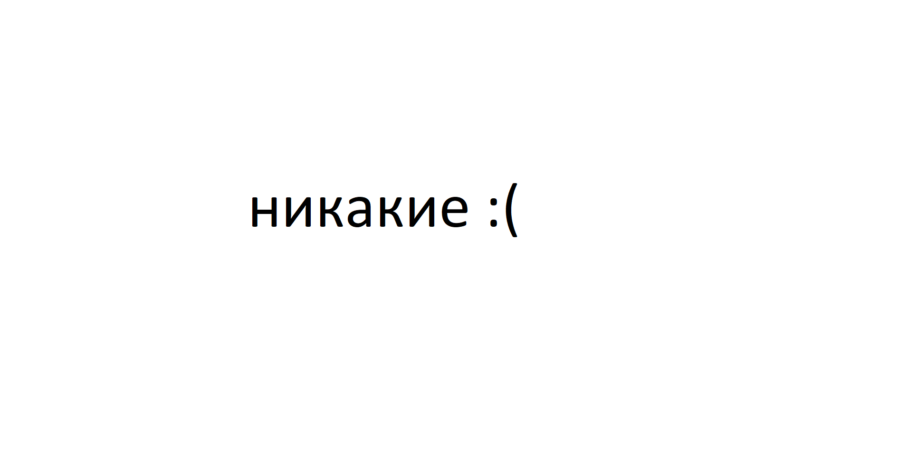

|
N_I_K_I_T_OS |
Добро пожаловать на мой сайт.
Здесь вы можете узнать о моих проектах или скачать их :)
Кто такой N_I_K_I_T_OS?
N_I_K_I_T_OS - Молодой разработчик инди проектов.
Умеет работать в Blender, UE, Web, RenPy, Ph, FL, VSC, VS и некоторых других программах с прикольными аббревиатурами.
Сотворил такие программы как:

И т.д